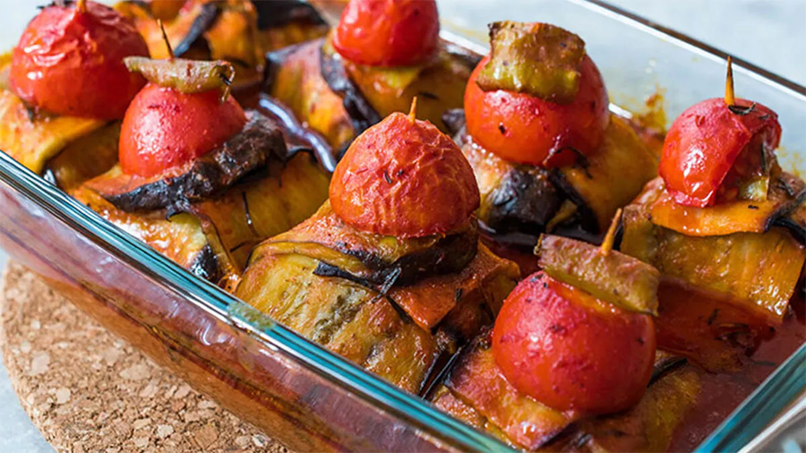

İSLİM KEBABI TARİFİ
Kaç kişilik: 4 Kişilik | Hazırlama Süresi: 20 Dakika | Pişirme Süresi: 45 Dakika
Kimine göre kürdan kebabı, kimine göre islim kebabı kimine göre ise köfteli patlıcan bohçası. Herkese göre değişiyor bu lezzetli yemeğin ismi. Değişmeyen bir şey var ki oda patlıcanın enfes lezzeti. Yapması göründüğü kadar zor olmayan, lezzeti göründüğünden daha fazla olan bir ana yemek tarifi. Hem köfte severleri hem de patlıcan severleri bir araya getiren bu kebabımızı misafirlerinize de yapabilirsiniz. Kürdan kebabı patlıcanların kızartılması ve içerisine köfte konularak kapatılmasıyla meydana gelmektedir. Siz hala kürdan kebabı tarifimi denemediyseniz geç kalmış sayılmazsınız. Tarifimi denemeyi ve defterinize eklemeyi unutmayın. Deneyeceklere şimdiden afiyet olsun.
Tarifin Sahibi: Melih GÜNEY
• MALZEMELER
Ana malzemeler;
- 4 adet patlıcan
- Yeşil biber
- Domates
Köftesi için malzemeler;
- 400 gr kıyma
- 1 adet soğan
- 2 diş sarımsak
- 1 adet yumurta
- 2 yemek kaşığı galeta unu
- 1 tutam maydonoz
- 1 çay kaşığı tuz
- 1 çay kaşığı karabiber
- 1 çay kaşığı pul biber
- 1 çay kaşığı kimyon
Sosu için malzemeler;
- 1 çay kaşığı tuz
- 1 yemek kaşığı domates salçası
- 2 su bardağı sıcak su
• KÖFTELİ İSLİM KEBABI NASIL YAPILIR?
- Köftesi için uygun bir yoğurma kabına kıyma, rendelenmiş soğan ve sarımsağı alalım.
- Üzerine yumurta, ekmek içi, ince kıyılmış maydanoz, tuz, karabiber, pul biber ve kimyon ekleyerek yoğuralım.
- Malzemeler birbiri ile güzelce özleştikten sonra ceviz büyüklüğünde parçalar kopararak elimizde yuvarlayalım ve üzerine bastırarak şekil verelim.
- Şekil verilen köftelerin üzerini streçlyerek bir kenarda bekletelim.
- Patlıcanları çizgili soyarak şerit şeklinde uzun uzun keselim ve tuzlu suda 15-20 dakika bekletelim.
- Daha sonra yıkayıp kurulayalım ve tavaya alıp kızdırdığımız sıvı yağda kızartalım.
- Kızaran patlıcanları havlu kağıt serili tabağa alalım. Aynı yağda köfteleride hafif kızartalım.
- Kızartma işlemi bittikten sonra 2 adet patlıcan alarak artı şeklinde koyalım ve ortasına 2 adet köfte yerleştirelim. Köfteler iri ise bir adette olabilir.
- Patlıcanın uçlarını köftenin üzerinde birleştirerek bohça gibi yapalım.
- Üzerine biber ve dilimlenmiş ya da çeri domatesten koyarak kürdan ile açılmayacak şekilde tutturalım.
- Tüm patlıcanları aynı şekilde yaparak fırın tepsisine dizelim.
- Ayrı bir kaba salça, tuz ve suyu alarak karıştıralım. Sosumuzu yemeğin üzerine gezdirelim.
- Hazırladığımız yemeğimizi önceden ısıtılmış 180 derece fırında domateslerin üzeri kızarana kadar yaklaşık 35 dakika pişirelim.
Afiyet olsun...